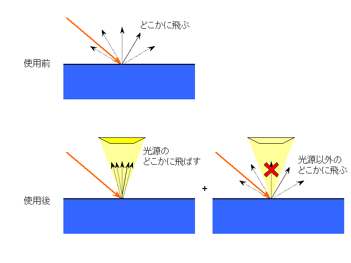

下の画像をクリックすると、飛ばすレイの数を指数関数的に増やした場合の変化をアニメーションとして見れます
(最初のほうの色がおかしいのはgifの変換のせいです)。
前回のネタをrend-algoで宣伝したところ、 藤田さんから「遅っせーよ(意訳)」というコメントをいただきました。 ということで、高速化を少し頑張ろうと思い、拡散反射光に関して光源からの寄与を直接評価する直接照明の技法を取り入れて見ました。
今回のプログラムは、次のものです。
まぁ、いつものように適当にファイルが入っています。 /p>
| render.cpp | レイトレ用の描画関数群 |
| render.h | レイトレ用の描画関数群 |
| prim.cpp | オブジェクトのデータのための関数 |
| prim.h | オブジェクトのデータのための関数 |
| ShapeData.cpp | オブジェクトの実データ |
| mainDlg.cpp | ダイアログを管理するクラスのメソッドが書かれたファイル |
| mainDlg.h | ダイアログを管理するクラスのヘッダ |
| main.h | メイン関数 |
| main.cpp | メイン関数 |
| StdAfx.h | 標準のシステム インクルード ファイルとか |
| StdAfx.cpp | 標準インクルードファイルを含むソース ファイル|
| resource.h | アイコンなどのＩＤが描いてあるヘッダ |
| common/my_include_h.html | ヘッダファイルの寄せ集め |
| common/my_types_h.html | 環境の依存性をなくすためのオレ様型定義 |
| common/system/CThread.h | work pile マルチスレッド |
| common/system/CThread.cpp | work pile マルチスレッド |
| common/graphics/CBitmap.h | BMP保存用の関数 |
| common/graphics/CBitmap.cpp | BMP保存用の関数 |
| common/math/CRand.h | MTによる乱数 |
| common/math/CColor.h | 色を統一的に処理する(予定の)ための色クラス |
あと、実行ファイル、リソースファイル、プロジェクトファイルが入っています。
今回は、拡散反射の評価方法が今までと違います。
今までは、拡散反射する面にあたったら、当たった面の法線を基準に２πsrの範囲でランダムに向きを選んで、
レイを（反射係数を出力に乗算して）別の方向に飛ばしていました。
今回は、拡散反射面にレイがあったら、レイを２つに分岐させます。
１つは、光源方向に飛ばし、もうひとつは、今までと同じようにランダムに飛ばします。
ただし、２つめのレイは直接光源に飛ぶものは無視します。

今回のモデルは、光源が３つの３角形からなっています。 １つめのレイは３角形の面積に応じてどちらの光源に飛ばすのか選択し、 さらに３角形の何所を目指して飛ぶのかランダムに決定して飛ばします。
レイの寄与ですが、立体角の定義が役に立ちます。
立体角は、物体を１[m]はなれたところから見たときの面積です。
つまり、光源の面積を反射面までの距離で割れば、光源が反射面の視界を覆う立体角がわかります（この計算は近似的なものです。曲がった空間への射影を考えなくてはならないので、正確な結果を得るためには、光源の３角形を細かく分割して、それぞれを射影したときの面積を計算するなどしなくてはなりません）。
半天球の立体角は２πsrなので、
光源からの光の強さ = (光源が覆う立体角 / ２π) * V(反射面, 光源の点) * 光源のつよさ
= (光源の面積 * cosθ / ２πd2) * V(反射面, 光源の点) * 光源のつよさ
になります。ここで、θは光源へ飛ばしたレイと光源の法線ベクトルのなす角度で、dは反射面から光源上の点までの距離です。V(x,x')は可視関数で、xからx'へレイを飛ばしたときに何もぶつからずに飛べれば1、さえぎられれば0となる関数です。
まぁ、プログラムでは、次のようになっています。
render.cpp
0505: D3DXVECTOR4 lp;
0506: D3DXVECTOR3 ln;
0507: // 光源から１点を選ぶ
0508: LIGHT_DATA *pData = choiceEmmisivePoint( &lp, &ln );
0509: D3DXVECTOR4 vr = lp-p; vr.w = 0;
0510: float d2 = D3DXVec3Dot((D3DXVECTOR3 *)&vr,(D3DXVECTOR3 *)&vr); // 反射点から光源までの距離の２乗
0511: D3DXVec4Normalize(&vr, &vr); // 反射点から光源を見る方向
0512:
0513: // その点が見えるかどうか調べる
0514: CPrimitive *pTObj = NULL;
0515: D3DXVECTOR4 tp, tn;// 交点の位置と法線
0516: float tt = CPrimitive::INFINTY_DIST;
0517: pos = p + 0.01f*(vr);
0518: tt = pShpereS ->IsAcross( tt, &tn, &tp, &pTObj, &pos, &vr );
0519: tt = pShpereT ->IsAcross( tt, &tn, &tp, &pTObj, &pos, &vr );
0520: tt = pRoom ->IsAcross( tt, &tn, &tp, &pTObj, &pos, &vr );
0521: // tt = pBlockSmall->IsAcross( tt, &tn, &tp, &pTObj, &pos, &vr );
0522: tt = pBlockTall ->IsAcross( tt, &tn, &tp, &pTObj, &pos, &vr );
0523:
0524: if( pTObj && 1.0f == pTObj->m_material.emmisive )
0525: {
0526: // 直接光と間接光の強さの割合を見える面積で求める
0527: float prob;
0528: prob = -g_fTotalArea * D3DXVec3Dot((D3DXVECTOR3 *)&vr, (D3DXVECTOR3 *)&ln)/d2;
0529: prob /= 2.0f*D3DX_PI;// 光源が半球を囲んだときの立体角は2πsr
0530: if(prob<0)prob=0;
0531: if(1<prob)prob=1;
0532:
0533: float rn = D3DXVec3Dot((D3DXVECTOR3 *)&vr, (D3DXVECTOR3 *)&n);
0534: rn = max( 0, rn );
0535: diffuse_color.x = prob * pTObj->m_material.COLOR_DIF[0] * rn;
0536: diffuse_color.y = prob * pTObj->m_material.COLOR_DIF[1] * rn;
0537: diffuse_color.z = prob * pTObj->m_material.COLOR_DIF[2] * rn;
0538: }
0539:
２つめのレイの寄与は、今までの計算のうち、光源に届かないものの寄与になりますが、
これは、今までと同じようにレイを飛ばして、レイが光源に直接あたった場合にその強さを0にします。
具体的には、関数にフラグ GETCOLOR_FLAG_DISABLE_EMMISIVE を追加して、
このフラグがたっているときには、光源にレイがあたったときにその強さを０にします。
render.cpp
0540: // --- ロシアンルーレットで別のレイも飛ばす
0541:
0542: // 等方的にレイを飛ばす
0543: float theta = D3DX_PI * (float)frand();
0544: float phi = 2.0f*D3DX_PI * (float)frand();
0545: dir.x = sinf(theta) * cosf(phi);
0546: dir.y = sinf(theta) * sinf(phi);
0547: dir.z = cosf(theta);
0548: float dn = D3DXVec3Dot((D3DXVECTOR3 *)&dir, (D3DXVECTOR3 *)&n);
0549: if(dn<0){
0550: // 法線と反対向きに飛ぶつもりなら、方向を反対にする
0551: dn = -dn;
0552: dir.x *= -1;
0553: dir.y *= -1;
0554: dir.z *= -1;
0555: }
0556:
0557: D3DXVECTOR3 c;
0558: pos = p + 0.01f*(dir);
0559: GetColor( &c, &pos, &dir, depth, GETCOLOR_FLAG_DISABLE_EMMISIVE );
0560: // プリミティブの色や拡散光の余弦側を適用
0561: diffuse_color.x += c.x * dn;
0562: diffuse_color.y += c.y * dn;
0563: diffuse_color.z += c.z * dn;
0564:
0565: diffuse_color.x *= pObj->m_material.COLOR_DIF[0] * 0.5f*D3DX_PI;
0566: diffuse_color.y *= pObj->m_material.COLOR_DIF[1] * 0.5f*D3DX_PI;
0567: diffuse_color.z *= pObj->m_material.COLOR_DIF[2] * 0.5f*D3DX_PI;
GETCOLOR_FLAG_DISABLE_EMMISIVE が立っているときには、放射する面（光源)にあたったときに、色を黒で返します。
render.cpp
0614: // -----------------------------------------------------------------------
0615: // 放射
0616: // -----------------------------------------------------------------------
0617: D3DXVECTOR3 emmisive_color;
0618: if(flag & GETCOLOR_FLAG_DISABLE_EMMISIVE)
0619: {
0620: emmisive_color = D3DXVECTOR3(0,0,0);
0621: }else{
0622: emmisive_color = *(D3DXVECTOR3*)&pObj->m_material.COLOR_DIF;
0623: }
藤田さんから、
前回の方法のマルチスレッド化ではスレッドを作成するオーバーヘッドがかかるので、ワークパイルの手法を使うほうが良いよと教えていただきました。
ワークパイルパターンとは、スレッドを複数常に立ち上げておき、各スレッドでは仕事があるかを常に監視して、仕事あまっていたらその仕事を受けとって処理します。
起動されたスレッドのフローチャートを書いてみると、次のようなものでしょうか。
とりあえず、終了処理が必要になることを考えて、終了条件が成立していたら終わって、そうでなければ処理をすることにします。
終了条件が成立しなければ、仕事があるか調べて、あれば仕事をします。
なければ（仕事がないのにCPUを100%消費しないように）少し休みます。
これが１ループになって、終了条件が満たされるまで回りつづけます。
実際の関数では、ラップしたクラスを作ってます。
こんな感じです。
render.cpp
0179: // ---------------------------------------------------------------------------
0180: // スレッド処理
0181: // ---------------------------------------------------------------------------
0185: unsigned int WINAPI workthread ( LPVOID pParam )
0186: {
0187: MySystem::CThreadMgr *pSender = (MySystem::CThreadMgr *)pParam;
0188: MySystem::CThreadData *ptr;
0189:
0190: while( pSender->IsEnable() )
0191: {
0192: while( NULL != (ptr = pSender->GetWork()) )
0193: {
0194: // --- ここからスレッドデータごとの処理
0195:
0196: rect *pRect = (rect *)ptr->GetData();
0197:
0198: for( s32 y = pRect->top; y < pRect->bottom; y++ )
0199: {
0200: for( s32 x = pRect->left; x < pRect->right; x++ )
0201: {
0202: D3DXVECTOR3 col;
0203:
0204: GetColor(&col, ((float)x+0.5f)/(float)RENDER_WIDTH
0205: , ((float)y+0.5f)/(float)RENDER_HEIGHT);
0206: int no = 4*(y*RENDER_WIDTH+x);
0207: s_total[no+0]+=col.x;// R
0208: s_total[no+1]+=col.y;// G
0209: s_total[no+2]+=col.z;// B
0210: }
0211: }
0212:
0213: // --- ここまでスレッドデータごとの処理
0214:
0215: // 終わったら、そのスレッドデータを殺す
0216: ptr->Finish( );
0217: }
0218: Sleep(10);
0219: }
0220:
0221: return 0;
0222: }
あっ、仕事がなくなるまで終了判定をとおらないや。やべっ！
MySystem::CThreadMgr というのがありますが、こいつは仕事を管理するスレッドの管理人です。
メインの関数は、CThreadMgr に仕事を与えます。
CThreadMgr は、仕事を溜め込んで、各スレッドから仕事の要求が着たら、まだ実行されていない仕事を割り当てます。
CThreadMgr が溜め込める仕事の量は、初期化時に指定できるようにしてあります。
こちらだと、スレッドに関するオーバーヘッドがほとんど無いので、細かい仕事も割り振れていい感じですね。
確かに１次散乱の収束は早いのですが、被写界深度や鏡面反射による散乱など他のパスに関する寄与は少ないので、
最終的な結果ができるまでの時間はほとんど変わらないんですよね。
他の経路に関しても効率の良い計算方法を考えないと。
{kind=link}